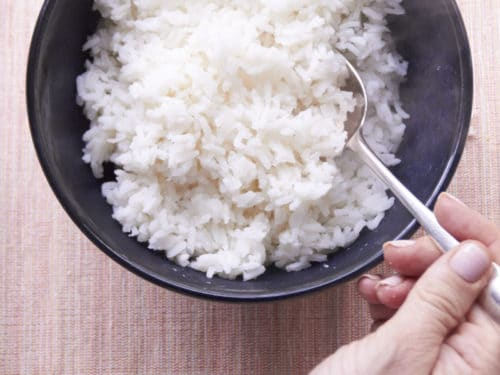

Perfect White Rice

Have you always wanted beautiful, fluuuuffy rice?
Well then, I got the juice for you!
Ingredients
- 2 cups of white rice
- 3 cups of water
- A pinch of salt
- 1 Tsp of Olive Oil
Tools
Instructions
- Put two scoops of white rice in the rice cooker bowl, fill it with water
- Wash the rice, A LOT. Like really a lot.
- Unironically, to preference(mine is when the water is clear),
stop washing and add Salt, pepper, and olive oil
- Press your "White Rice" button on your cooker and wait for the ding
BACK TO REALITY, I mean the Recipe list